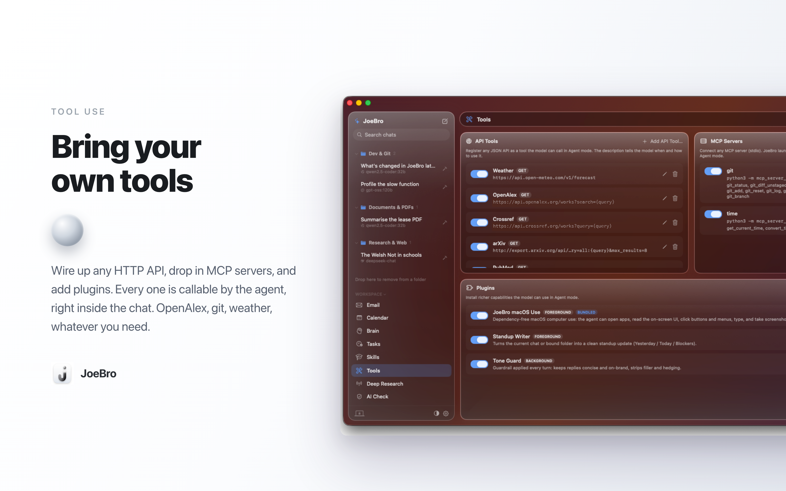

I’m Joe, the creator of JoeBro. MCP can give an AI agent useful capabilities, but a tool connection is also a program running with real permissions. JoeBro therefore treats MCP servers as things the user adds on the Mac, rather than silently enabling a catalog of services.
In the Tools tab, you provide a server name, launch command and arguments. JoeBro starts the process over stdio, discovers its tools and makes them available in Agent mode. The client uses a short-lived, stateless interaction: start the server, initialize it, call a tool, then end the process. Each interaction has a wall-clock timeout; a server that does not respond is stopped so it cannot hold up the turn indefinitely. You can disable a server, edit its launch details or remove it.
That convenience does not make every server safe. An MCP server runs on your Mac with the permissions available to its command. A filesystem server, for example, should be scoped to the folder it needs rather than your entire home directory. Check a project’s source, license, credentials and requested permissions before adding it. The model decides when to call exposed tools based on their descriptions, so descriptions should state clearly what each tool can do and when to use it.
The phone agent cannot add or change MCP servers. Pairing a phone does not install extra programs or expand the server list. This limits what someone holding a phone token can configure, while still allowing the phone agent to use tools already available to its Mac workspace.
Tools also affect the data boundary. A server may call an external service or access local files depending on its design and configuration. Separately, the model endpoint you choose receives the prompt needed for a tool call: a hosted model provider processes that content, while a local model uses the endpoint you selected. Cloak Mode replaces detected sensitive values before requests, but it is pattern-based and does not replace reviewing the access you grant.
I’m Joe, creator of JoeBro and its source-build companion JoeBro Mobile. The Mac README and user guide explain the current tool setup.
Source code and current setup requirements
JoeBro is GPLv3 software. Read the repositories for installation steps, prerequisites, and current limits.